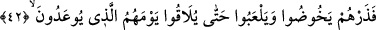
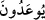
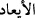
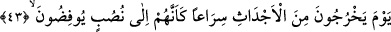

42. Ama sen onları (şimdilik) bırak da, tehdid edildikleri günlerine kavuşuncaya
dek dalsınlar, oynayadursunlar.
“Bırak onları” kendi hâllerine bırak! Şu anda ya da sürekli, “tehdid edildikleri
günlerine”; yâni sûra ikinci kez üfürüldüğünde dirilecek oldukları güne
“kavuşuncaya”, o günle karşılaşıncaya ve o günü ayan beyân görünceye “kadar
dalsınlar” yâni bâtılları içinde oyalansınlar. Bu bâtıl hareketlerinden birisi de yukarda
anlatılan sözleridir.
Dünyalarında kendilerine fayda vermeyen şeylerle meşgul olmak sûretiyle
“oynayadursunlar.” Bu esnâda sen de kendine emredilen şeylerle meşgul olursun. Bu
kelime bir önceki kelimedeki emrin cevabıdır, onlar için bir tehdîd ve azarlamadır.
Tıpkı Cenâb-ı Hakk’ın; “Dilediğinizi yapın, şüphesiz O, yaptıklarınızı görmektedir.”
[119] buyuruğu gibi. Bu âyet-i kerîme daha sonra kâfirlere karşı kılıç kullanmaya izin
veren âyetle neshedilmiş, hükmü yürürlükten kaldırılmıştır.
“Yevmehum/günleri”. Bu Sûr’a ikinci üfürüşle meydana gelen yeniden dirilme
günüdür. Bu günün onlara izâfe edilmesi, o günün bütün yaratıkların günü olmasından
dolayıdır. Kâfirler de o yaratıklardandır. Ya da kıyâmet günü azap açısından kâfirlerin,
sevab açısından da müminlerin günüdür. Sanki o iki gündür, biri kâfirlerin ve biri de
müminlerin.
Tehdîd edildikleri şeklinde tercüme edilen fiil, âyette “__WORD__ şeklinde yer
almaktadır. Bu fiilin kökü “va’d”dır, “Bu va’d (tehdid) ne zaman gerçekleşecek?”
(Yasin, 36/48) âyet-i kerîmesinde olduğu gibi. Bu kelimenin “__WORD__: korkmak” kökünden
gelmesi de mümkündür.
43. O gün onlar, sanki dikili bir şeye koşuyorlar gibi, kabirlerinden fırlaya fırlaya
çıkarlar.
“O gün” kelimesi, yukarda geçen “onların günleri”nden bedeldir, bu sebeple
dirilme gününe hamledilmiştir. Âyette yer alan “ecdâs” kelimesi “cedes” kelimesinin
çoğulu olup kabir anlamınadır. “Sirâan” kelimesi “yahrucûne” kelimesinin fâilinden
hâldir ve “serî’” kelimesinin çoğuludur, tıpkı “zarîf” kelimesinin çoğulunun “zırâf”
olması gibi. Anlamı ise; o gün onlar sanki çağırıcıya ve onun sesine doğru koşarlar ki
bu çağırıcı İsrafil (a.s.)’dır. Daha evvel geçtiği üzere bir kayanın üzerinden
seslenecektir.
“Sanki onlar dikili bir şeye koşuyorlarmış gibi” ifâdesi fâilin ikinci hâlidir.